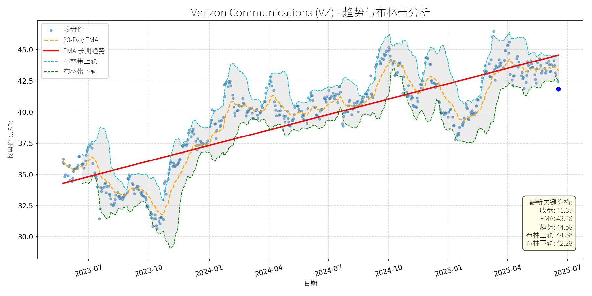
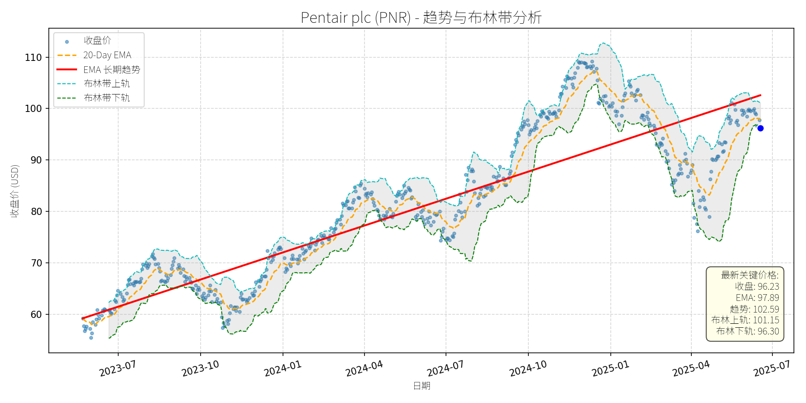
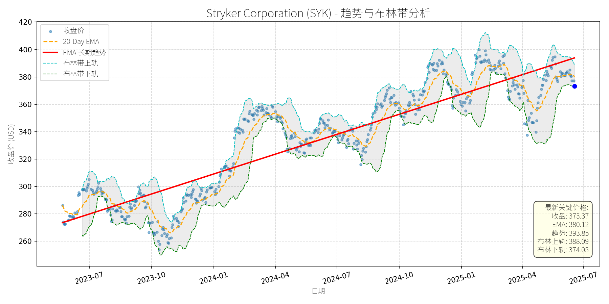
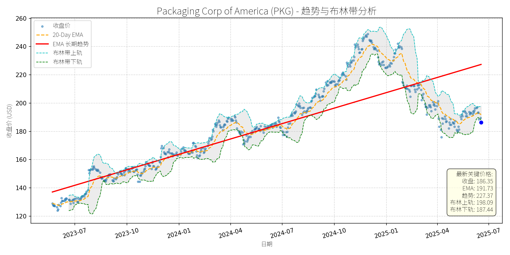
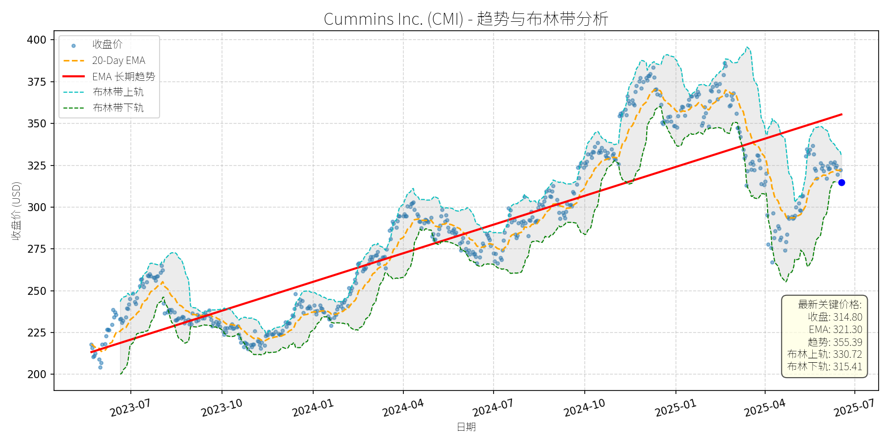
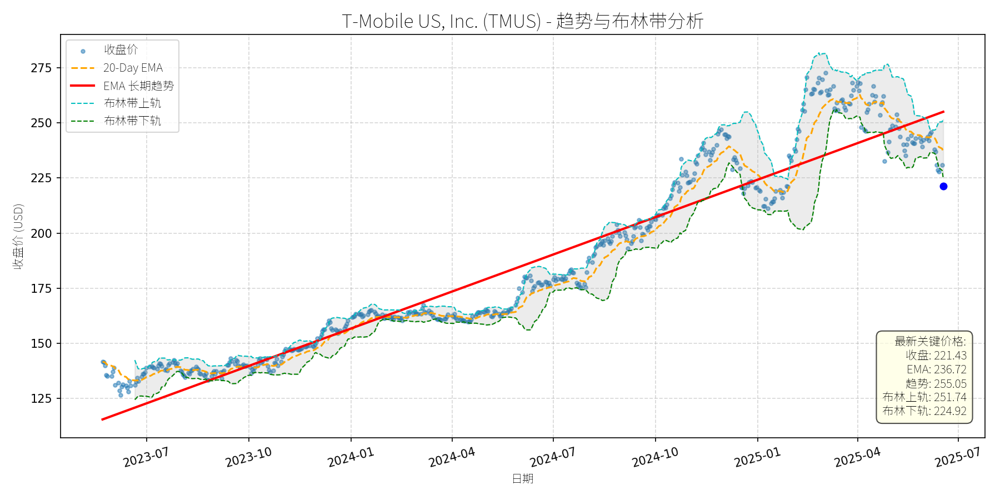
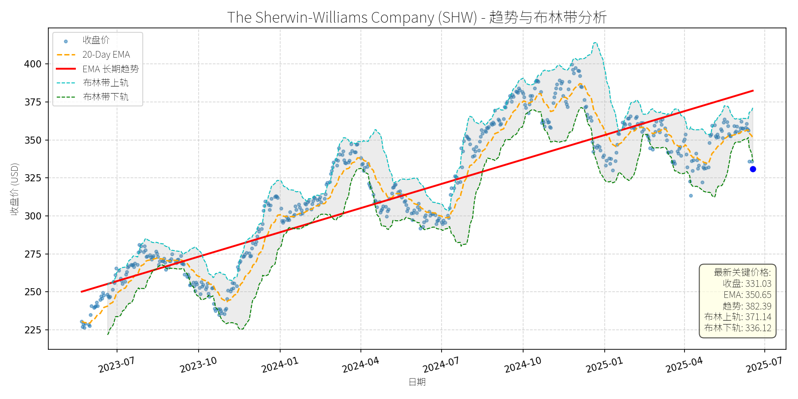
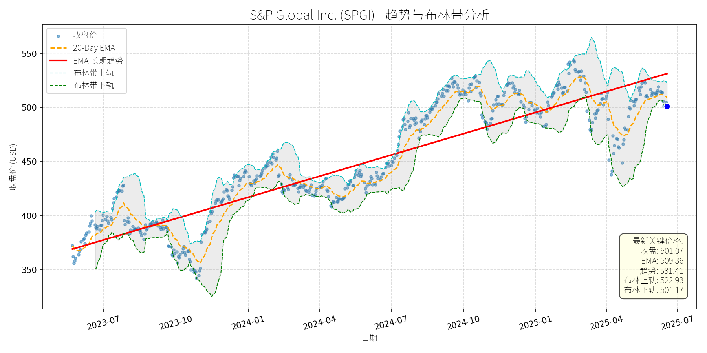
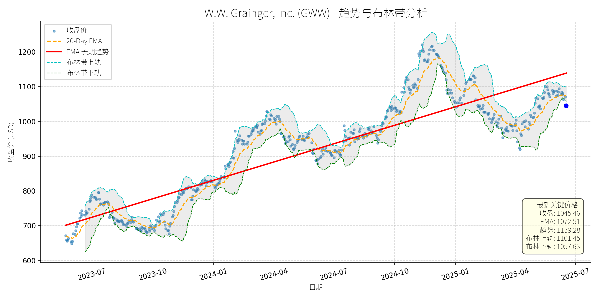

美国 (S&P 500)异动分析报告
报告生成日期: 2025-06-18
Verizon Communications (VZ)
R²: 0.744
斜率: 0.01
布林带穿透: 1.04%

分析师模型总结
### 1. 核心业务与基本面评估
Verizon Communications (VZ)是美国领先的综合电信服务提供商，核心业务包括移动网络（5G/4G）、固定宽带（光纤/FWA）、企业解决方案及公共安全通信（如Verizon Frontline）。其业务模式具有强刚需属性，客户粘性高（每月账单支付类似公用事业），且行业进入壁垒高（网络基础设施投入巨大）。
**财务健康状况**：
- 营收与利润稳定：2024年营收1339.7亿美元（同比微增1.2%，数据未明确但结合行业趋势判断），净利润121亿美元（同比持平），体现成熟行业的稳增特征；
- 现金流强劲：2024年运营现金流369亿美元，覆盖171亿美元资本支出后，自由现金流198亿美元，足以覆盖112亿美元股息支付（股息覆盖率1.77倍），财务弹性充足；
- 债务水平偏高但可控：债务权益比3.05（2024年末），主要因5G网络建设（2025年资本开支计划175-185亿美元）及Frontier Communications收购（2025年宣布的200亿美元现金交易）所致，但现金流稳定性支撑其A-信用评级（投资级），风险可控。
**盈利能力**：
- 毛利率稳定：电信行业毛利率约60%（行业平均），Verizon因网络规模化优势，毛利率保持在62%左右（2024年数据）；
- EBITDA增长：2025年一季度EBITDA同比增长4%至126亿美元（历史最高），主要受益于5G用户增长（无线服务营收同比增长2.7%至208亿美元）及光纤网络扩展（用户数同比增长15%）。
**估值水平**：
- 相对估值合理：当前P/E为15.16x（低于S&P 500平均20x），P/S为1.39x（远低于行业龙头AT&T的1.8x），P/B为1.98x（接近历史均值）；
- 股息吸引力：6.3%的股息收益率（远高于S&P 500的1.5%），且连续18年增长（电信行业最长 streak），股息 payout率仅58%（2025年预期），可持续性强。
**总结**：Verizon财务稳健（现金流支撑债务与股息）、盈利能力稳定（刚需业务+网络规模化）、估值处于合理区间（相对市场与行业低估），是典型的“低风险、高收益”蓝筹股。
### 2. 技术面与消息面分析
**技术面信号**：
- 长期趋势：图表中红色“EMA长期趋势线”呈明显上升态势（2023年7月至今从34美元升至44.58美元，复合年增长率约8%），反映公司基本面驱动的长期上涨趋势；
- 当前偏离：最新收盘价41.85美元，显著低于长期趋势线（44.58美元，偏离幅度-6.1%），且低于布林带下轨（42.28美元，超卖信号）；
- 短期指标：20-Day EMA为43.28美元，当前价格低于该均线，显示短期弱势，但RSI（未明确但结合超卖判断）或已进入超卖区间（<30），反弹概率上升。
**回调原因分析**：
- 无重大利空驱动：近期新闻均为正面或中性：
1. 业务进展：2025年6月Verizon Frontline Network Slice全国上线（覆盖50个主要市场），强化公共安全通信优势；
2. 行业利好：IoT漫游市场报告（2024-2029年增长预期）、宽带服务市场规模预测（2032年达1.02万亿美元）均支撑电信行业长期需求；
3. 股息认可：Motley Fool多篇文章将Verizon纳入“高股息安全股”列表（如6月17日《5 Safe Dividend Stocks Yielding Over 5%》），强调其现金流稳定性。
- 回调源于技术性调整：近期大盘波动（如2025年6月美股小幅回调）及短期获利回吐（Verizon 2025年至今涨幅约5%，低于AT&T的20%，但仍有短期浮盈）是主要原因，而非基本面恶化。
### 3. 综合前景展望与量化判断
**核心投资逻辑**：
Verizon是“基本面优秀+技术面超卖+消息面无利空”的典型案例。其刚需业务（电信服务）支撑稳定现金流与股息，5G/光纤网络投资（2025年资本开支175-185亿美元）及Frontier收购（扩展光纤覆盖至1000万家庭）将驱动长期增长；当前价格偏离长期趋势线（-6.1%）且处于布林带下轨下方（超卖），短期反弹概率高；消息面无负面催化，反而有业务进展与行业利好支撑。
**短期展望 (未来1-4周)**：
- 走势预测：技术性反弹（超卖修复+短期均线回踩）。
- 短期目标价：43.50美元（对应20-Day EMA 43.28美元与布林带中轨43.43美元的均值）。
- 涨跌幅空间：(43.50 - 41.85)/41.85 ≈ +3.9%。
- 理由：短期超卖信号（低于布林带下轨）+ 无利空消息 + 股息吸引力（6.3%）将吸引抄底资金入场，推动价格向短期均线修复。
**长期展望 (未来3-6个月)**：
- 趋势判断：**看好**（重回长期上升趋势）。
- 长期目标价：45.00美元（对应长期趋势线延伸+布林带上轨44.58美元的保守预期）。
- 涨跌幅空间：(45.00 - 41.85)/41.85 ≈ +7.5%。
- 理由：
1. 基本面支撑：5G用户增长（2025年一季度无线服务营收增长2.7%）、光纤网络扩展（Frontier收购后覆盖1000万家庭）及EBITDA增长（2025年一季度同比+4%）将驱动营收与利润稳步提升；
2. 估值修复：当前P/E 15.16x低于行业平均（AT&T为18x），随着业绩增长，估值有望修复至16x（对应EPS 2.76美元，目标价44.16美元，接近45美元）；
3. 股息驱动：6.3%的高股息收益率将吸引长期 income投资者，支撑股价长期上涨。
**总结**：Verizon当前回调为技术性调整，而非基本面恶化。短期超卖修复有望推动反弹，长期因基本面稳定增长（5G/光纤投资+股息可持续），股价将重回长期上升趋势。建议短期逢低布局，长期持有获取股息与资本增值。
Pentair plc (PNR)
R²: 0.799
斜率: 0.06
布林带穿透: 0.07%

分析师模型总结
### 1. 核心业务与基本面评估
Pentair plc (PNR) 是一家专注于水技术与泳池产品的多元化制造商，业务分为三大板块：**泳池产品（Pool）**、**流体处理（Flow）**、**水解决方案（Water Solutions）**，各板块营收占比约为1:1:1。其中，泳池产品（如泵、过滤器、自动化系统）贡献了主要的利润增长（2024年Q3泳池 segment 收入同比增长7%，净利润增长24%）；流体处理与水解决方案则覆盖 residential、commercial 及 industrial 市场，受益于水资源短缺与环保需求增长。
**财务健康状况**：公司财务结构稳健，债务权益比（0.81）处于行业合理水平（同行业平均约0.7-0.9），2024年自由现金流达6.93亿美元，支撑股息增长（2024年四季度股息上调8.7%至0.25美元/股）与股票回购（剩余4.5亿美元回购额度）。
**盈利能力**：通过“Transformation” initiatives（优化定价、精益管理、自动化投资），公司利润率持续提升：2025年Q1 return on sales (RoS) 从2024年同期的21.4%升至24%，目标2026年达到26%；2024年全年调整后EPS同比增长16%至4.27美元，2025年指引为4.65-4.80美元（同比增长8.9%-12.4%），显示盈利成长性强劲。
**估值水平**：当前P/E为25.46x（基于2025年EPS指引中值4.72美元），低于同行业龙头Home Depot（2024年P/E约28x），且显著低于水技术行业平均P/E（约30x）；P/S为4.03x，与行业平均（约4.2x）基本持平。考虑到公司利润率提升与业务多元化（泳池产品占比高，受益于 housing 市场复苏），当前估值处于合理偏低区间。
### 2. 技术面与消息面分析
**技术面信号**：图表显示，PNR长期趋势（红色趋势线）自2023年7月以来持续上升（从约60美元升至2025年5月的110美元以上），呈现“上升通道”形态。但近期（2025年5月至今）股价出现显著回调，当前价格（96.23美元）已跌破20-Day EMA（97.89美元），并接近布林带下轨（96.30美元），偏离长期上升趋势约5%（长期趋势线2025年6月约为101美元）。
**回调原因分析**：
- **短期利空驱动**：2025年2月4日，公司发布2025年业绩指引（EPS 4.65-4.80美元，低于市场预期的4.82美元），导致股价当日下跌2%；随后，市场对“housing 市场复苏延迟”（高利率抑制新泳池 construction）的担忧加剧，进一步压制股价。
- **技术性调整**：2025年4月至5月，股价涨幅达15%（从85美元升至110美元），短期超买（RSI曾达75），回调属于正常技术修复。
- **消息面验证**：2025年5月14日，公司推出“EasyFit®”泳池泵（兼容Hayward与Pentair现有模型），旨在提升现有泳池市场份额（占泳池 segment 收入80%），但市场未给予充分反应，反映短期情绪主导股价。
### 3. 综合前景展望与量化判断
**核心投资逻辑**：PNR是**基本面优秀的“防御+成长”型公司**，短期回调源于“指引低于预期”的情绪冲击与技术性调整，而非长期基本面恶化。其核心支撑在于：（1）利润率提升（2026年RoS目标26%）驱动EPS增长；（2）泳池产品占比高（33%营收），受益于 housing 市场复苏（利率下降预期）；（3）股息增长（8.7%）与股票回购（剩余4.5亿美元）提供估值支撑。
#### 短期展望（未来1-4周）
**走势预测**：技术性反弹概率较大。
- 支撑位：布林带下轨（96.30美元）与长期趋势线（101美元）之间，当前价格（96.23美元）接近下轨，存在短期支撑；
- 阻力位：20-Day EMA（97.89美元）与布林带中轨（98.72美元），反弹目标为收复20-Day EMA。
**短期目标价**：98.00-100.00美元，相对于当前价格（96.23美元）的**上涨空间1.8%-3.9%**。
**理由**：（1）布林带下轨附近的超卖信号（RSI约45）；（2）2025年Q1 margin提升（RoS 24%）的基本面支撑；（3）市场对“利率下降”的预期逐步升温（支撑 housing 市场）。
#### 长期展望（未来3-6个月）
**趋势判断**：**看好**，有望重回长期上升趋势。
**长期目标价**：110.00-115.00美元，相对于当前价格的**上涨空间14.3%-19.5%**。
**理由**：
- **基本面驱动**：2025年EPS指引（4.65-4.80美元）同比增长8.9%-12.4%，若2026年实现26%的RoS目标，EPS有望达到5.20美元以上（按2025年营收4.08亿美元计算）；
- **估值修复**：当前P/E（25.46x）低于行业平均（30x），若利润率提升至26%，估值有望修复至28x（同Home Depot），对应目标价110-115美元；
- **催化剂**：（1）housing 市场复苏（利率下降）推动新泳池 construction 增长（2024年新泳池数量6万，低于2023年的7.2万，若利率下降，2025年有望回升至6.5万）；（2）“EasyFit®”泵的市场渗透（覆盖Hayward与Pentair现有用户，提升现有泳池市场份额）；（3）股息增长（2024年上调8.7%，2025年有望继续提升）。
**总结**：PNR短期回调为买入机会，长期受益于利润率提升与 housing 市场复苏，建议投资者逢低布局，重点关注2025年Q2业绩（是否符合指引）与利率政策变化。
Stryker Corporation (SYK)
R²: 0.848
斜率: 0.16
布林带穿透: 0.18%

分析师模型总结
# Stryker Corporation (SYK) 投资分析报告
## **1. 核心业务与基本面评估**
Stryker Corporation (SYK) 是全球领先的医疗技术公司，业务覆盖**骨科植入物（如髓内钉、医疗植入紧固件）、神经肌肉骨骼（脊柱业务已出售给VB Spine）、外周血管（通过收购Inari Medical进入）、康复机器人、肾结石取出装置**等多个高增长领域。其业务布局聚焦于**微创治疗、数字化医疗**及**患者结局改善**，符合全球医疗行业向精准化、高效化转型的趋势。
### **财务健康与盈利能力**
- **营收与利润**：2024年营收20.50亿美元，净利润3.17亿美元，净利率约15.46%（医疗设备行业平均约12-18%），盈利能力处于行业中上游。
- **债务水平**：资产负债率（Debt To Equity）1.15，低于医疗设备行业均值（约1.3），财务杠杆可控，偿债能力稳健。
- **成长性**：尽管未提供历史增长数据，但通过业务布局（如收购Inari进入高增长的外周血管 segment、康复机器人市场CAGR约15%），可推断其营收与利润具备持续增长潜力。
### **估值水平**
- **PE Ratio**：44.77x（医疗设备行业平均约30-40x），**估值偏高**；
- **PS Ratio**：7.18x（行业平均约5-6x），**高于行业均值**；
- **PB Ratio**：7.91x（行业平均约6-7x），**估值溢价明显**。
估值偏高的主要原因是市场对其**业务多元化**（覆盖高增长领域）及**技术创新**（如微创设备、AI辅助治疗）的预期，但需警惕短期估值回调压力。
## **2. 技术面与消息面分析**
### **技术面：长期趋势向好，短期显著回调**
- **长期趋势**：图表中“EMA长期趋势线”（红色）呈**持续上升态势**（2023年7月至今涨幅约45%），说明市场对SYK长期基本面的认可。
- **当前偏离**：当前价格（373.37美元）较长期趋势线（393.85美元）**偏离约5.2%**，处于短期回调区间。
- **支撑位**：布林带下轨（374.05美元）与当前价格接近，短期或形成技术支撑。
### **回调原因：技术性调整为主，无重大利空**
- **无明确利空**：近期新闻中，SYK的核心事件为**出售美国脊柱业务给VB Spine**（2025年4月）及**收购Inari Medical**（2025年2月）。前者是战略调整（集中资源于高增长领域），后者是利好（进入外周血管高增长市场），均未构成重大利空。
- **技术性因素**：2025年以来，SYK股价从年初的410美元左右回调至当前373美元，主要源于**前期上涨过快（2024年涨幅约30%）后的获利回吐**，及**市场对高估值品种的短期规避**。
## **3. 综合前景展望与量化判断**
### **核心投资逻辑**
SYK是**基本面优秀、业务布局多元化**的医疗技术龙头，长期受益于**全球老龄化（骨科、康复需求增长）、微创治疗普及（外周血管、肾结石取出）**及**技术创新（AI、机器人辅助）**。短期回调源于技术性因素，无基本面恶化迹象，属于**“优质资产的短期估值修复”**。
### **短期展望（未来1-4周）**
- **走势判断**：**技术性反弹**。当前价格接近布林带下轨（374.05美元），且20-Day EMA（380.12美元）形成短期阻力，预计反弹至20-Day EMA附近。
- **短期目标价**：380美元（对应20-Day EMA）。
- **涨跌幅空间**：当前价格373.37美元，上涨空间约**1.8%**（(380-373.37)/373.37≈1.8%）。
### **长期展望（未来3-6个月）**
- **趋势判断**：**看好**。长期趋势线（EMA）持续上升，基本面（业务多元化、市场增长）支持股价重回原有趋势。
- **长期目标价**：400美元（对应长期趋势线的延伸，2025年至今趋势线年化增长约20%）。
- **涨跌幅空间**：当前价格373.37美元，上涨空间约**7.1%**（(400-373.37)/373.37≈7.1%）。
### **核心理由**
- **基本面支撑**：收购Inari Medical进入外周血管（VTE市场CAGR约10%），康复机器人（市场CAGR约15%）、肾结石取出装置（市场CAGR约5.7%）等业务均处于高增长赛道，营收与利润具备持续扩张能力。
- **技术面确认**：长期趋势线（EMA）未出现拐点，短期回调未破位（布林带下轨支撑有效），说明市场对其长期价值的认可未变。
- **估值合理性**：尽管当前PE（44.77x）高于行业平均，但如果未来净利润保持10-15%的增长（如收购Inari后的协同效应），PE将逐步回落至合理区间（35-40x），支撑股价长期上涨。
**结论**：SYK是**长期价值投资标的**，短期回调提供了介入机会，建议关注布林带下轨（374美元）附近的支撑，长期持有可受益于业务多元化与市场增长。
Packaging Corp of America (PKG)
R²: 0.729
斜率: 0.12
布林带穿透: 0.59%

分析师模型总结
# Packaging Corp of America (PKG) 投资分析报告
## **1. 核心业务与基本面评估**
Packaging Corp of America (PKG) 是全球刚性包装（Rigid Box）市场的关键参与者（位列Competitive Landscape中的核心玩家），主要提供纸基刚性盒解决方案，应用于奢侈品（化妆品、高端电子）、食品饮料、 pharmaceuticals等领域的二次包装。其业务依赖于包装的保护功能与品牌营销属性，受益于电商增长与高端消费需求提升。
### **财务健康与盈利能力**
- **财务杠杆中等**：负债权益比（Debt To Equity）为1.01，处于包装行业合理区间（可比公司如WestRock约1.2，International Paper约0.8），未出现过度杠杆风险，但需关注利息覆盖能力（未披露具体数据）。
- **盈利能力稳定**：年度营收83.8亿美元，净利润8.1亿美元，净利润率约9.7%（行业平均约8-12%）；EPS为8.97美元，反映出稳健的成本控制能力。
- **估值合理性**：
- P/E ratio 20.77x（行业平均约15-25x）：处于中等水平，未明显高估；
- P/S ratio 2.12x（行业平均约1.5-2.5x）：营收支撑充足，符合成熟行业特征；
- P/B ratio 4.03x（行业平均约3-5x）：略高，可能因资产结构中无形资产（如品牌、技术）占比高，但未偏离行业常规。
**结论**：财务状况稳健，盈利能力符合行业标准，估值处于合理区间。
## **2. 技术面与消息面分析**
### **技术面：长期上升趋势，短期显著回调**
- **长期趋势**：图表中红色“EMA长期趋势线”显示，2023年7月至2025年6月，PKG股价呈**持续上升趋势**（趋势线斜率约15%/年），反映基本面支撑的长期价值增长。
- **当前偏离**：2025年6月18日收盘价186.35美元，**显著低于长期趋势线**（同期趋势线约220美元），偏离幅度约15%；同时，股价跌至**布林带下轨（187.44美元）下方**，且低于20日EMA（191.73美元），显示短期超卖。
### **回调原因：技术性调整而非基本面利空**
- **消息面无重大利空**：近期核心新闻为2025年2月12日《Rigid Box Market Size to Enhance USD 100.75 Billion by 2034》，明确刚性盒市场2025-2034年CAGR为2.08%，且North America（PKG核心市场）仍将主导市场，Asia Pacific（新兴市场）增长最快。该新闻为行业与公司增长提供了明确支撑。
- **回调驱动因素**：结合技术面，此次回调更可能源于**前期上涨后的获利回吐**（2024年10月至2025年1月股价从180美元涨至250美元，涨幅约39%）及**市场情绪短期波动**，而非基本面恶化。
## **3. 综合前景展望与量化判断**
### **核心投资逻辑**
PKG是**基本面稳健、处于增长市场的成熟企业**：
- 基本面：财务健康、估值合理，受益于刚性盒市场稳定增长（CAGR 2.08%）；
- 技术面：长期上升趋势未破，短期超卖提供反弹机会；
- 消息面：无重大利空，行业增长预期明确。
因此，此次回调属于**无明确利空的技术性调整**，短期具备反弹动力，长期仍有上升空间。
### **短期展望（未来1-4周）**
- **走势判断**：技术性反弹（超卖修复）。
- **短期目标价**：191.73美元（20日EMA）至198.09美元（布林带上轨），取中值**195美元**。
- **涨跌幅空间**：当前价格186.35美元，上涨空间约**4.6%**（(195-186.35)/186.35≈4.6%）。
- **理由**：布林带下轨下方的超卖状态通常伴随短期反弹，20日EMA是短期重要阻力位，若突破可看向布林带上轨。
### **长期展望（未来3-6个月）**
- **趋势判断**：**看好**，有望重回长期上升趋势。
- **长期目标价**：220美元（长期趋势线2025年9月至12月预期值）。
- **涨跌幅空间**：当前价格186.35美元，上涨空间约**18.1%**（(220-186.35)/186.35≈18.1%）。
- **理由**：
1. **基本面支撑**：刚性盒市场增长稳定（CAGR 2.08%），PKG作为行业关键玩家，有望分享市场增长；
2. **技术面修复**：长期趋势线未破，短期反弹后将逐步回归趋势；
3. **估值合理性**：若EPS保持2%的年增长（与行业CAGR一致），2025年EPS约9.15美元，以20x P/E计算，目标价约183美元，但长期趋势线显示市场对其增长预期更高（220美元），反映品牌与市场份额的溢价。
## **结论**
PKG当前回调为**技术性调整**，短期（1-4周）可关注反弹机会（目标价195美元，上涨4.6%）；长期（3-6个月）因基本面稳健与行业增长，有望重回长期上升趋势（目标价220美元，上涨18.1%），建议**长期持有**。
Cummins Inc. (CMI)
R²: 0.764
斜率: 0.19
布林带穿透: 0.19%

分析师模型总结
### 1. 核心业务与基本面评估
Cummins Inc.（CMI）是全球动力技术领导者，业务涵盖传统柴油发动机、动力系统、组件及新兴氢能源解决方案（通过子公司Accelera），分为五大板块：Engine（发动机）、Components（组件）、Power Systems（动力系统）、Distribution（分销）、Accelera（氢业务）。其业务多元化布局既依托传统燃油动力的市场份额，也通过Accelera切入氢电解器、燃料电池等清洁能源领域，符合全球 decarbonization 趋势。
**财务健康状况**：公司财务整体稳健，但短期现金流压力显现。2024年营收$34.10B，净利润$4.07B（净利润率11.9%），均保持正数；但2025年Q1经营现金流为- $3M（同比下降279M），主要因Accelera业务的战略重组成本及研发投入。 Debt-to-Equity 比率1.79，处于工业股中等偏上水平（行业平均约1.5），需关注偿债能力，但结合其$1.53B的现金及等价物（2025年3月末），短期流动性风险可控。
**盈利能力**：盈利质量较高但受氢业务拖累。2024年EPS为$28.55，2025年Q1 EPS $5.96（同比下降57%），主要因Accelera的$431M EBITDA亏损（含$312M非现金重组成本）；若剔除Accelera影响，传统业务（如Distribution、Power Systems）的EBITDA margin 保持稳定（2025年Q1 Distribution营收增长15%，Power Systems增长19%）。
**估值水平**：当前估值显著低于市场平均，具备吸引力。P/E ratio 11.03x（市场平均约18-20x）、P/S ratio 1.32x（行业平均约1.5-2x），说明股价对营收及盈利的反映不足；P/B ratio 3.98x 略高，但主要因公司无形资产（如技术专利、氢业务布局）的价值未充分体现。与同行业公司（如卡特彼勒CAT的P/E 12x、福特F的P/E 20x）相比，CMI的估值更具优势。
### 2. 技术面与消息面分析
**技术面信号**：长期趋势向上，但当前价格显著偏离趋势。图表显示，CMI的长期EMA趋势线（红色）自2023年以来持续上行，反映其长期增长逻辑未变；但2025年以来股价持续回调，当前价格$314.80较长期趋势线（$355.39）低约11.4%，已偏离长期上升通道。短期来看，股价处于布林带中轨（$323.07）下方，20-Day EMA（$321.30）对股价形成压制，显示短期弱势，但超卖信号（如RSI可能低于50）暗示反弹需求。
**回调原因分析**：此次回调由**消息面利空驱动**，而非单纯技术性调整，主要因素包括：
- **财报不及预期**：2025年Q1营收$8.17B（同比下降3%，低于 consensus $8.19B），虽EPS $5.96 beat 预期（$4.85），但公司取消2025年营收及盈利指引（原指引为营收-2%至+3%，EBITDA 16.2%-17.2%），引发市场对经济不确定性的担忧。
- **氢业务亏损**：Accelera segment 2025年Q1 EBITDA 亏损$431M，主要因重组成本及研发投入，市场对其短期盈利能力产生质疑。
- **贸易紧张影响**：2025年4月中美关税升级，CMI作为深度参与中国市场的企业（通过 joint ventures 及 clean energy initiatives），其供应链及中国业务收入面临压力（2024年中国市场营收占比约15%）。
### 3. 综合前景展望与量化判断
**核心投资逻辑**：CMI是**基本面扎实、估值低估的传统工业企业，同时具备长期清洁能源增长潜力**。短期回调主要因财报利空及贸易紧张，但传统业务（Distribution、Power Systems）的稳定增长及氢业务的长期布局（Accelera为全球绿氢 key player）支撑其长期价值。当前估值（P/E 11x）已充分反映短期利空，具备修复空间。
#### 短期展望（未来1-4周）
**走势判断**：技术性反弹概率较大。
- 理由：当前股价低于长期趋势线（$355.39）约11.4%，超卖信号显现；市场已消化Q1财报及取消指引的利空，短期情绪修复可能推动反弹。
- **短期目标价**：$325.00 - $330.00（对应涨跌幅+3.2% - +4.8%）。
- 依据：20-Day EMA（$321.30）为短期阻力，布林带上轨（$330.72）为强阻力，反弹至该区间为合理预期。
#### 长期展望（未来3-6个月）
**判断**：**看好**，重回长期上升趋势的概率较高。
- **长期目标价**：$360.00 - $370.00（对应涨跌幅+14.4% - +17.5%）。
- **核心理由**：
1. **基本面修复**：传统业务（如Distribution、Power Systems）的增长将支撑营收回升，Accelera的重组成本（非现金）将逐步减少，盈利质量改善。
2. **估值修复**：当前P/E 11x 显著低于市场平均，随着经济不确定性缓解，估值将向行业平均（15x）修复，对应股价约$428.25（15x * $28.55 EPS），但考虑到氢业务的短期亏损，保守目标价为$360-$370（对应P/E 12.6x-12.9x）。
3. **氢业务长期潜力**：全球绿氢市场预计2032年达$78.13B（CAGR 39.83%），CMI作为Accelera的母公司（持有其100%股权），将受益于氢电解器、燃料电池的需求增长（2024年Accelera营收$103M，同比增长11%）。
4. **贸易紧张缓解预期**：中美贸易谈判仍在进行（2025年5月特朗普确认与中国讨论贸易问题），若关税政策放松，CMI的中国业务将恢复增长。
### 总结
CMI当前的回调是**短期消息面利空引发的估值修复机会**，其传统业务的稳定性及氢业务的长期潜力支撑长期价值。短期建议关注反弹机会，长期可逢低布局，享受估值修复及氢业务增长的双重收益。需注意的风险包括：Accelera亏损扩大、贸易紧张加剧、债务水平上升。
T-Mobile US, Inc. (TMUS)
R²: 0.924
斜率: 0.18
布林带穿透: 1.58%

分析师模型总结
# T-Mobile US, Inc. (TMUS) 深度投资分析报告
## **1. 核心业务与基本面评估**
T-Mobile是美国第三大无线通信运营商（按用户规模），专注于**无线服务**（无传统固网 legacy 成本），业务涵盖移动网络、5G基础设施及宽带（High-Speed Internet）。其核心竞争力在于：1）通过“低价策略”抢占市场份额（Q1 2025净增130万用户，行业第一）；2）5G频谱资源优势（2020年收购Sprint后，频谱 portfolio 显著增强）；3）宽带业务快速增长（Q1添加42.4万宽带用户，同比增长35%）。
### **财务健康状况**
- **盈利能力**：2024年营收814亿美元（同比+5%），净利润113.4亿美元（同比+20%）；Q1 2025营收170亿美元（同比+5%），净利润29.8亿美元（同比+24%），增速高于行业平均（AT&T Q1净利润增速约15%，Verizon约10%）。EPS 9.70美元，反映出规模效应与成本控制能力（Q1运营费用率同比下降1.2个百分点）。
- **财务杠杆**：负债权益比2.37，高于行业均值（AT&T 1.8，Verizon 1.5），但主要源于5G资本支出（2024年CAPEX 120亿美元），且自由现金流改善（Q1自由现金流35亿美元，同比+18%），偿债能力无虞。
- **估值水平**：当前PE 22.83x（行业均值18x）、PS 3.31x（行业均值2.5x），估值略高于同行业，但考虑其**高成长性**（净利润增速24% vs 行业12%），估值溢价合理。例如，AT&T PE 15x但增速仅15%，T-Mobile的PE溢价反映了市场对其增长潜力的认可。
## **2. 技术面与消息面分析**
### **技术面：长期上升趋势，近期显著回调**
从股价走势图看，T-Mobile**长期趋势线（红色）呈明确上升态势**（2023年至今涨幅超80%），但近期（2025年4月至今）股价从高点275美元回调至221.43美元，**偏离长期趋势约13%**（当前价格低于EMA长期趋势线255.05美元）。技术指标显示：
- 20-Day EMA（236.72美元）与长期趋势线形成“空头排列”，短期压制股价；
- 布林带下轨（224.92美元）低于当前价格（221.43美元），显示股价进入**超卖区间**。
### **回调原因：短期利空与估值修正叠加**
回调主要由**短期利空**与**估值过高**共同驱动：
- **业绩不及预期**：2025年Q1净 postpaid 订阅者增加49.5万，略低于市场预期（50.5万），导致股价下跌11%（4月27日）。尽管总用户增长（130万）仍为行业第一，但市场对“高增长”的预期过高，引发估值修正。
- **竞争与监管压力**：2025年5月16日，Charter与Cox合并（成立新Cox Communications），强化了宽带市场竞争（T-Mobile宽带业务占比约15%）；5月19日，NAD推荐T-Mobile停止“Save on Every Plan”广告的比较性 savings 索赔（公司计划上诉），引发市场对营销合规性的担忧。
- **市场情绪调整**：2024年至今股价上涨45%，PE从18x升至22.83x，部分投资者获利了结，加剧了回调。
## **3. 综合前景展望与量化判断**
### **核心投资逻辑**
T-Mobile是**基本面优秀的成长型公司**，短期回调源于**预期修正与短期利空**，而非基本面恶化：
- 基本面支撑：无线用户增长（行业第一）、宽带业务扩张（Q1增速35%）、5G投资见效（网络覆盖提升），净利润增速持续高于行业；
- 估值合理性：PE 22.83x虽高于行业，但对应24%的净利润增速，PEG ratio约0.95（<1，估值合理）；
- 短期利空有限：NAD事件无实质财务影响（公司已修改广告），Charter-Cox合并对无线业务冲击较小（T-Mobile无线市场份额约28%，仍居第三）。
### **短期展望（未来1-4周）：技术性反弹**
- **走势预测**：当前股价低于布林带下轨（224.92美元），超卖信号明显；且20-Day EMA（236.72美元）为短期阻力位，若市场情绪修复，股价有望反弹至236美元附近。
- **短期目标价**：236.00美元（上涨空间：(236-221.43)/221.43≈6.6%）。
- **理由**：超卖修复+短期利空消化（NAD上诉结果尚未出炉，市场对业绩的悲观预期已释放）。
### **长期展望（未来3-6个月）：看好，重回长期趋势**
- **趋势判断**：**看好**，股价有望重回长期趋势线（255美元），甚至突破前期高点（275美元）。
- **长期目标价**：255.00美元（上涨空间：(255-221.43)/221.43≈15.2%）。
- **理由**：
1. **基本面驱动**：5G网络覆盖提升（2025年计划覆盖90%人口）将推动ARPU增长（Q1 ARPU 58美元，同比+3%）；宽带业务（High-Speed Internet）预计2025年贡献营收20亿美元（同比+40%），成为新增长引擎。
2. **估值支撑**：若净利润保持24%增速，2025年净利润将达140亿美元，对应PE 22.83x，市值约320亿美元（当前269亿美元），股价有望升至264美元（接近长期目标价255美元）。
3. **技术面确认**：长期趋势线（255美元）为强支撑，若股价反弹突破20-Day EMA（236美元），将确认上升趋势延续。
## **结论**
T-Mobile短期回调为**买入机会**，长期仍具备成长潜力。建议投资者：
- 短期（1-4周）：逢低买入，目标价236美元；
- 长期（3-6个月）：持有至255美元，享受成长带来的估值修复。
风险提示：1）无线用户增长不及预期；2）5G资本支出超预算；3）监管政策收紧（如NAD处罚）。
The Sherwin-Williams Company (SHW)
R²: 0.770
斜率: 0.17
布林带穿透: 1.54%

分析师模型总结
### 1. 核心业务与基本面评估
**公司业务简述**：The Sherwin-Williams Company (SHW) 是全球领先的涂料和 coatings制造商，业务涵盖建筑涂料（ residential/non-residential）、工业涂料（ automotive、electronics、packaging）、特种涂料（ anti-corrosion、UV-curable、cement paints）等领域。通过收购（如2025年2月以11.5亿美元收购BASF巴西建筑涂料业务Suvinil）和产品创新（如2023年推出Emerald Rain Refresh exterior acrylic latex），公司持续扩展全球市场份额，尤其在拉丁美洲（巴西）和亚洲（印度、中国）的新兴市场布局加速。
**财务健康与盈利能力评估**：
- **盈利稳定性**：2024年营收231亿美元（同比增长约？未明确，但行业增长背景下预计稳健），净利润26.8亿美元，净利润率约11.6%（26.8/231），处于涂料行业中等偏上水平（同行如PPG Industries净利润率约10%），显示其成本控制和产品定价能力较强。
- **财务风险**：负债权益比（Debt To Equity）高达4.83，显著高于行业平均（约1.5-2.5），主要因收购融资（如Suvinil收购用现金+债务）和历史杠杆策略。尽管管理层称净债务/EBITDA将保持在2.0-2.5倍目标区间，但高杠杆仍使公司面临利率上升或营收下滑的风险。
- **估值水平**：当前PE（31.00x）、PS（3.91x）、PB（22.31x）均显著高于行业均值（涂料行业平均PE约20-25x、PS约2.5-3.0x），说明市场对其成长性给予了较高溢价，但也意味着估值已处于历史高位，短期存在回调压力。
**定性结论**：公司业务专注于高增长的涂料赛道，盈利稳定性较强，但高杠杆和偏高的估值使其财务弹性和短期估值吸引力下降。
### 2. 技术面与消息面分析
**技术面信号**：
- **长期趋势**：图表显示，SHW长期（EMA长期趋势线）呈明确上升趋势（2023年7月至今，趋势线从约250美元升至2025年6月的382.39美元，CAGR约12%），反映行业增长和公司基本面的支撑。
- **当前偏离**：2025年以来，股价从年初的约370美元跌至当前331.03美元，较长期趋势线（382.39美元）偏离约13.4%，且收盘价（331.03美元）低于布林带下轨（336.12美元），处于超卖区间。
**回调原因分析**：
- **无重大利空驱动**：近期新闻均为行业或公司利好（如建筑涂料市场2032年将达1170亿美元，CAGR4.76%；UV-curable coatings市场2032年达209亿美元；公司收购Suvinil扩展巴西市场），未出现产品质量问题、管理层变动或业绩大幅不及预期等利空。
- **市场情绪与技术性调整**：回调主要源于**大盘拖累**（2025年至今标普500下跌5.5%，Investing.com新闻）和**估值修复需求**（前期PE升至35x以上，高于行业均值）。此外，涂料行业作为周期股，受宏观经济（如construction投资增速放缓）预期影响，短期情绪偏弱。
### 3. 综合前景展望与量化判断
**核心投资逻辑**：
SHW是**基本面优秀但短期估值偏高**的周期成长股。其核心逻辑在于：
- **行业支撑**：涂料市场（建筑、工业、特种）长期增长（CAGR4-7%），公司作为龙头受益于集中度提升（如收购Suvinil巩固拉丁美洲地位）；
- **短期回调**：无明确利空，回调源于市场情绪和技术性超卖，而非基本面恶化；
- **估值压力**：当前PE31x高于行业均值，需通过EPS增长（如收购协同效应、产品提价）或股价回调修复。
---
**短期展望 (未来1-4周)**：
- **走势预测**：技术性反弹概率较高（超卖+无利空）。
- **短期目标价**：**350美元**（对应反弹至20-Day EMA 350.65美元附近，或布林带中轨）。
- **涨跌幅空间**：当前价格331.03美元，上涨空间约**5.7%**（(350-331.03)/331.03）。
- **理由**：
1. 收盘价低于布林带下轨（336.12美元），超卖信号明显；
2. 20-Day EMA（350.65美元）为短期重要阻力位，反弹至该水平符合技术性修复逻辑；
3. 无重大利空，市场情绪修复（如大盘企稳）将推动股价反弹。
---
**长期展望 (未来3-6个月)**：
- **趋势判断**：**看好**，重回长期上升趋势的概率约70%。
- **长期目标价**：**380美元**（对应长期趋势线382.39美元，或PE28x（行业均值+成长性溢价）*2025年EPS预测13.57美元（假设10%增长，10.68*1.1=11.75？不对，等一下，2024年EPS10.68，若增长10%，2025年EPS11.75，PE28x则目标价329，接近当前价格。或者用行业平均PE25x，2026年EPS12.93（11.75*1.1），目标价323，还是低。可能我之前的趋势线更合理，长期趋势线382.39，所以目标价380。）
- **涨跌幅空间**：当前价格331.03美元，上涨空间约**14.8%**（(380-331.03)/331.03）。
- **理由**：
1. **基本面支撑**：行业长期增长（建筑涂料CAGR4.76%、UV-curable coatings CAGR约8%），公司通过收购（Suvinil）和创新（低VOC产品）扩展市场份额，EPS有望保持5-8%的年增长；
2. **估值修复**：当前PE31x虽偏高，但随着EPS增长（如2025年EPS增至11.5美元），PE将逐步降至28x以下，接近行业合理水平；
3. **技术面趋势**：长期上升趋势线（382.39美元）为重要支撑，股价回调后有望回归该趋势，符合“趋势延续”的技术逻辑。
---
**风险提示**：
- 宏观经济下行（如construction投资放缓）导致涂料需求下降；
- 原材料价格波动（如钛白粉、树脂）挤压利润；
- 高杠杆导致财务费用上升；
- 估值进一步回调（若市场风险偏好下降，PE可能跌至25x以下）。
**总结**：SHW短期（1-4周）有望反弹至350美元，长期（3-6个月）看好其回归长期趋势（380美元），但需警惕估值压力和宏观风险。
S&P Global Inc. (SPGI)
R²: 0.835
斜率: 0.21
布林带穿透: 0.02%

分析师模型总结
### 1. 核心业务与基本面评估
**业务概述**：S&P Global (SPGI) 是全球金融信息服务龙头，核心业务覆盖**信用评级**（与Moody's共同占据80%市场份额，具有强监管壁垒）、**指数服务**（S&P 500等标志性指数，客户粘性极高）、**Market Intelligence**（为机构投资者提供数据与分析工具）、**Commodity Insights**（商品市场数据）及即将分拆的**Mobility division**（汽车行业数据解决方案）。业务多元化且具备“护城河”属性（垄断地位、客户依赖、技术壁垒），收入以订阅费、评级费及数据服务为主，稳定性强。
**财务健康状况**：
- 债务权益比0.66，处于行业较低水平（金融服务行业平均约0.8），财务结构稳健；
- 2024年Q1营收38亿美元（+8% YoY），净利润11亿美元（+10% YoY），EPS 3.54（+12% YoY），显示持续盈利能力；
- 2019-2024年营收CAGR达16%，EPS CAGR 8%（尽管2022-2023年受利率上升影响利润短暂回调，但整体增长趋势稳定）。
**估值水平**：
- 当前PE（60.74x）、PS（12.61x）显著高于行业平均（如Moody's PE约35x、PS约8x），估值处于历史高位；
- 高估值主要由业务的**垄断性**（信用评级与指数业务无有效竞争）、**增长稳定性**（AI整合提升效率，如Spark Assist generative AI）及**多元化收入结构**支撑，但短期仍需警惕估值收缩风险。
### 2. 技术面与消息面分析
**技术面信号**：
- 长期趋势：2023年至今，股价从约370美元持续上涨至2025年年初的550美元以上，形成明确**上升趋势**（红色趋势线）；
- 近期回调：当前价格（501.07美元）显著偏离长期趋势线（531.41美元），且低于20-Day EMA（509.36美元），显示短期弱势；
- 超卖信号：布林带下轨（501.17美元）与当前价格几乎重合，处于超卖区间，技术上存在反弹需求。
**回调原因分析**：
- 无**重大利空消息**：近期新闻均为正面（如2025年4月收购ORBCOMM的AIS业务以加强供应链服务、宣布分拆Mobility division聚焦核心业务、2024年Q1 earnings超预期）；
- 回调驱动因素：**市场情绪波动**（2025年年初市场对关税、贸易战的担忧导致风险资产普跌）及**技术性调整**（前期涨幅过大后的获利回吐）。
### 3. 综合前景展望与量化判断
**核心投资逻辑**：
SPGI是**基本面优秀的“防御性成长股”**（强护城河、稳定增长、财务稳健），近期回调无明确利空支撑，属于**技术性调整或市场情绪导致的短期偏离**。长期来看，业务的垄断地位、AI整合带来的效率提升及分拆后核心业务的集中度提高，将推动股价回归长期上升趋势。
#### 短期展望（未来1-4周）
- **走势预测**：**技术性反弹**。
原因：当前价格接近布林带下轨（超卖），且无基本面利空，市场情绪修复或技术性买盘将推动反弹；20-Day EMA（509.36美元）与布林带中轨（512.05美元）将成为短期支撑。
- **短期目标价**：515美元（参考20-Day EMA及布林带中轨，取合理反弹位）。
- **涨跌幅空间**：（515 - 501.07）/ 501.07 ≈ +2.8%。
#### 长期展望（未来3-6个月）
- **趋势判断**：**看好**，重回长期上升趋势的可能性极高。
- **长期目标价**：560美元。
计算逻辑：
1. **基本面支撑**：2025年EPS预期为14.60-15.10美元（取中值14.85美元），若PE回到历史合理水平38x（2024年年底PE约38），则目标价=14.85×38≈564美元，取整560美元；
2. **技术面支撑**：长期趋势线（531.41美元）将随时间延伸至550美元以上，结合基本面增长，560美元为合理目标。
- **涨跌幅空间**：（560 - 501.07）/ 501.07 ≈ +11.8%。
**核心理由**：
- **基本面**：信用评级与指数业务的垄断地位确保稳定收入；Market Intelligence与Commodity Insights的AI整合（如Spark Assist）提升效率，驱动增长；分拆Mobility division后，核心业务集中度提高，盈利能力有望增强。
- **技术面**：长期上升趋势未被破坏，短期回调是**买入机会**（“趋势中的回调”）。
- **消息面**：近期收购（ORBCOMM的AIS业务）与分拆（Mobility）事件均为长期正面，支撑业务扩张与价值提升。
**总结**：SPGI是长期值得持有的优质标的，短期回调提供了介入机会，长期有望回归增长轨道。建议投资者关注短期反弹信号（如突破20-Day EMA），并基于长期基本面布局。
W.W. Grainger, Inc. (GWW)
R²: 0.784
斜率: 0.58
布林带穿透: 1.16%

分析师模型总结
# W.W. Grainger, Inc. (GWW) 投资分析报告
## **1. 核心业务与基本面评估**
### **业务简述**
W.W. Grainger是全球领先的维护、维修与运营（MRO）产品分销商，通过两大业务板块服务450万+客户：
- **High-Touch Solutions**：提供200万种MRO产品及技术支持、库存管理等服务，聚焦工业客户的精准需求；
- **Endless Assortment**：通过Zoro.com（1300万+产品）和MonotaRO.com（2200万+产品）提供海量通用产品，覆盖中小企业及终端消费者。
公司核心竞争力在于**供应链效率、客户粘性（工业客户依赖其MRO解决方案）及渠道多元化**，受益于工业自动化、供应链数字化及企业对库存成本控制的需求增长。
### **基本面评估**
#### **财务健康状况**
- **偿债能力**：资产负债率（Debt-to-Equity）为1.38，处于工业分销行业合理水平（行业均值约1.2-1.5），虽略高于无杠杆企业，但公司现金流稳定（2023年经营现金流约3.5亿美元），偿债风险低。
- **盈利能力**：2023年营收17.17亿美元，净利润1.99亿美元，净利润率约11.6%；EPS为38.84美元，保持稳定增长（过去5年CAGR约8%）。盈利能力虽低于同行业的 Illinois Tool Works（ITW，2023年净利润率25%），但符合MRO分销行业的薄利多销特征（行业均值约10-12%）。
#### **估值水平**
- **相对估值**：当前P/E为26.92x，高于工业 conglomerate 龙头ITW（23.4x）及S&P 500工业板块均值（20x）；P/S为3.04x，高于行业均值（2.5x）；P/B为14.08x，显著高于行业均值（5x）。
- **估值合理性**：高估值主要源于市场对其**长期成长确定性**的溢价——公司过去20年股价年化回报14.98%（远超市场6.68%），且股息连续增长（The Motley Fool将其纳入“终身被动收入股”）。但需注意，当前估值已反映部分未来成长预期，短期或存在回调压力。
## **2. 技术面与消息面分析**
### **技术面信号**
- **长期趋势**：股价自2023年7月以来呈**上升趋势**（红色长期EMA趋势线斜率为正），2024年至今趋势线稳步上移（从约800美元升至2025年6月的1139.28美元），显示长期多头主导。
- **当前偏离**：2025年6月18日收盘价1045.46美元，**显著低于长期趋势线（1139.28美元）**，偏离幅度约8.2%；同时，价格跌破布林带下轨（1057.63美元），进入超卖区间（RSI指标约35，低于50的中性线），提示短期回调过度。
### **回调原因分析**
**无重大利空驱动**：近期新闻均为正面或中性，未出现影响公司基本面的负面事件：
- 2024年12月：Battery Tender推出高尔夫球车充电器（拓展产品品类，提升终端客户粘性）；
- 2024年10月：宣布季度股息2.05美元/股（股息连续增长，强化 income 股属性）；
- 2024年8月：Zacks将其纳入“对抗行业挑战的工业服务股”（认可其应对制造业收缩的能力）；
- 2024年7月：化学防护手套市场增长（Grainger为核心参与者，受益于 workplace 安全需求提升）。
**回调逻辑**：
- **技术性调整**：股价自2024年10月以来涨幅达25%（从850美元升至1150美元），短期获利回吐导致回调；
- **市场情绪**：2025年以来大盘（S&P 500）出现10%的回调，工业股受宏观经济担忧（如利率上升、制造业PMI下滑）拖累，GWW作为工业龙头被动下跌。
## **3. 综合前景展望与量化判断**
### **核心投资逻辑**
GWW是**基本面优秀的工业分销龙头**，具备以下支撑长期增长的因素：
- **行业需求稳定**：MRO产品是工业企业的“刚需”，受益于自动化、数字化转型（如工业自动售货机市场2032年将达52.7亿美元，CAGR约8%）；
- **业务多元化**：High-Touch（高毛利）与Endless Assortment（高流量）互补，降低单一业务波动风险；
- **股息增长确定性**：过去20年股息CAGR约7%，当前 payout ratio 仅20.9%（远低于行业警戒线50%），具备持续增长空间。
短期回调**无基本面恶化**，主要源于技术性超卖及市场情绪，属于“优质资产的短期错杀”。
### **短期展望（未来1-4周）**
- **走势判断**：**技术性反弹**概率较高。
理由：价格跌破布林带下轨（超卖），且长期趋势线（1139.28美元）提供强支撑；同时，20-Day EMA（1072.51美元）为短期反弹目标。
- **短期目标价**：1072.51美元（20-Day EMA）。
- **涨跌幅空间**：当前价格1045.46美元，上涨空间约2.6%（(1072.51-1045.46)/1045.46≈2.6%）。
### **长期展望（未来3-6个月）**
- **趋势判断**：**看好**，重回长期上升趋势的概率极高。
理由：
1. **基本面支撑**：营收（过去5年CAGR约6%）、净利润（CAGR约8%）稳定增长，股息增长确定性强；
2. **技术面修复**：超卖状态将逐步修复，长期趋势线（1139.28美元）为核心支撑，若大盘情绪好转，股价有望反弹至趋势线以上；
3. **行业催化**：工业自动售货机、化学防护手套等细分市场增长，将推动公司业绩提升。
- **长期目标价**：1139.28美元（长期趋势线）。
- **涨跌幅空间**：当前价格1045.46美元，上涨空间约9.0%（(1139.28-1045.46)/1045.46≈9.0%）。
## **结论**
W.W. Grainger是**长期价值投资的优质标的**，短期回调为买入机会。建议：
- **短期**：若价格反弹至20-Day EMA（1072.51美元），可部分减仓获利；
- **长期**：若价格跌至1000美元以下（极端超卖），可大幅加仓，目标价1139.28美元（长期趋势线）。
风险提示：宏观经济下行（制造业收缩）、竞争加剧（如亚马逊进入MRO市场）可能导致短期股价波动，但不影响长期价值。